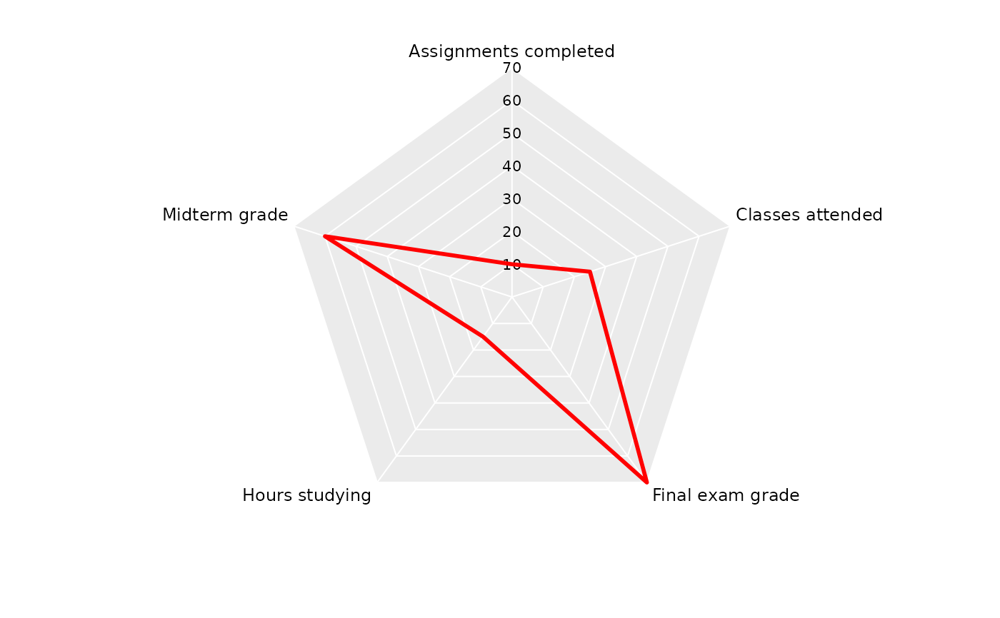
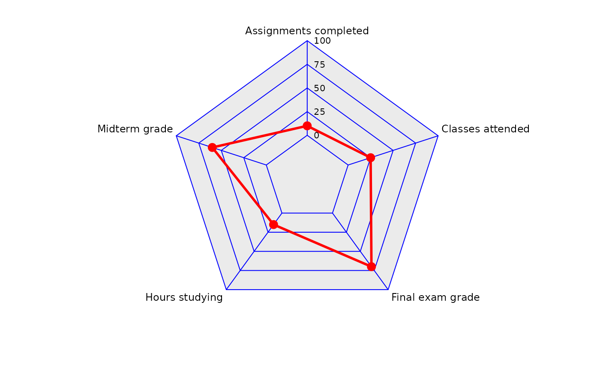
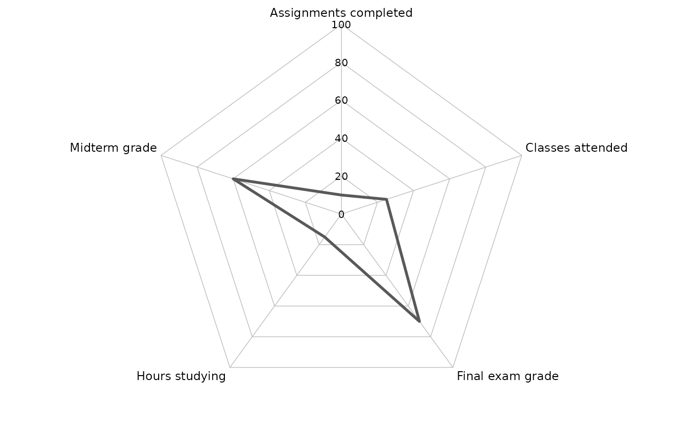

coord_spider() implements a new spider / radar coordinate system using a linear (non-munched) polar-like transform. It is intended for spider charts where connected paths are drawn as straight chords between axes (not circular arcs), and where background grid rings are polygons (not circles).
Compared to ggplot2::coord_radial(), this coordinate system:
uses
is_linear() = TRUEto prevent path "munching" into arcs;supports a polygonal background grid (rings + spokes);
optionally draws axis labels (theta) and radial (r) labels using
gridgrobs in the panel background.
Typical usage is to map a discrete variable (categories) to x (theta) and a continuous variable (scores) to y (radius), then draw a polygon with geom_polygon().
plot2() uses this novel coordinate system to plot spider plots, created using plot2(..., type = "spider").
Usage
coord_spider(
theta = "x",
start = 0,
clip = "off",
inner.radius = 0,
outer.radius = 0.8,
axis_labels = TRUE,
axis_label_size = 9,
axis_label_pad_mm = 1,
r_labels = TRUE,
r_label_size = 8,
r_label_pad_mm = 0
)
CoordSpiderArguments
- theta
Character scalar specifying which position aesthetic is interpreted as the angular coordinate (theta). Must be
"x"or"y". In the common spider-chart case, usetheta = "x"with a discretexscale (categories around the circle) and a continuousyscale (radius). Settingtheta = "y"swaps these roles.- start
Numeric scalar giving the angular offset in radians for the first axis. Angles increase according to the
directionfield stored in the coord (this implementation fixesdirection = 1internally). Withstart = 0, the first axis is at 12 o'clock (positive vertical). Usestart = pi/2to rotate the first axis to 3 o'clock, etc.- clip
Character scalar passed through to the coordinate system to control clipping of grobs to the panel. Use
"on"to clip all drawing (including axis labels drawn inrender_bg()) to the panel region, and"off"to allow grobs to extend outside the panel. Whenclip = "on", labels that lie beyond the panel boundary will be cut off, so in that case it is recommended to setouter.radius < 1to reserve headroom inside the panel.- inner.radius
Numeric scalar in [0, 1) specifying the inner radius of the spider coordinate system as a fraction of the panel radius. Values greater than 0 create a "donut" / hollow center. The data radius is linearly rescaled onto [
inner.radius,outer.radius].- outer.radius
Numeric scalar in (0, 1] specifying the maximum radius used for drawing the spider geometry as a fraction of the panel radius. Setting
outer.radius < 1shrinks the spider grid and data polygon inward, thereby reserving whitespace inside the panel for labels while keepingclip = "on". This is the preferred way to create consistent headroom independent of plot margins and device size.- axis_labels
Logical; if
TRUE, draw the theta-axis labels (typically the discrete category labels) at the ends of the spokes usinggrid::textGrobin the panel background. Labels are taken from the trained discrete limits of the theta scale.- axis_label_size
Numeric scalar giving the font size (in points) for theta-axis labels drawn when
axis_labels = TRUE.- axis_label_pad_mm
Numeric scalar giving the outward padding (in mm) applied to theta-axis labels beyond the spoke endpoints. This padding is applied in npc coordinates via
grid::unit(). Increase this to separate labels from the grid. Whenclip = "on", excessive padding may push labels outside the panel and cause clipping; prefer reducing padding or decreasing outer.radius` in that case.- r_labels
Logical; if
TRUE, draw radial (r / y-scale) labels along the "upper" spoke (the spoke at anglestart, i.e. 12 o'clock whenstart = 0). Breaks and labels are taken from the trained radial scale (typically theyscale whentheta = "x"). This means user-suppliedscale_y_continuous(breaks = ...)will control both the grid rings and the printed radial labels.- r_label_size
Numeric scalar giving the font size (in points) for radial labels drawn when
r_labels = TRUE.- r_label_pad_mm
Numeric scalar giving the horizontal padding (in mm) applied to radial labels from the upper spoke. Use positive values to move labels to the right of the spoke. With
clip = "on", large padding can cause clipping; consider smaller padding and/or smallerouter.radius.
Value
A ggproto object that inherits from ggplot2::Coord. This object is used by ggplot2 to transform data coordinates and to render the panel background (grid rings/spokes and optional axis labels).
Examples
# Example data: one observation across five metrics.
# 'metric' is the discrete theta axis, 'value' is the radial axis.
library(ggplot2)
df <- data.frame(
metric = c("Final exam grade",
"Midterm grade",
"Assignments completed",
"Hours studying",
"Classes attended"),
value = c(70, 60, 10, 15, 25))
df
#> metric value
#> 1 Final exam grade 70
#> 2 Midterm grade 60
#> 3 Assignments completed 10
#> 4 Hours studying 15
#> 5 Classes attended 25
ggplot(df, aes(metric, value, group = 1)) +
# Spider/Radar plots only require geom_polygon() with coord_spider():
geom_polygon(colour = "red", fill = NA, linewidth = 1) +
coord_spider()

ggplot(df, aes(metric, value, group = 1)) +
geom_polygon(colour = "red", fill = NA, linewidth = 1) +
geom_point(colour = "red", size = 3) +
coord_spider(inner.radius = 0.25,
r_label_pad_mm = 2) +
scale_y_continuous(limits = c(0, 100),
breaks = c(0, 25, 50, 75, 100)) +
theme(panel.grid.major.y = element_line(colour = "blue"))

df |>
plot2(type = "spider")
#> ℹ Using x = metric
#> ℹ Using y = value
